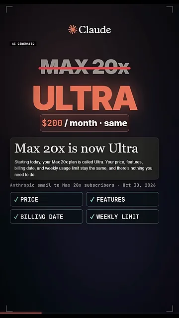
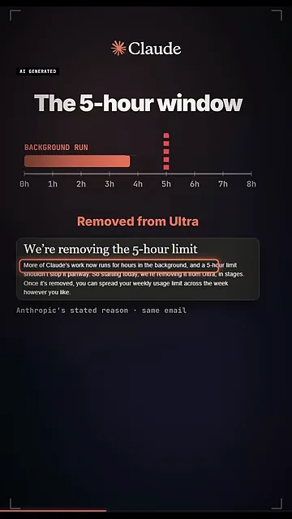
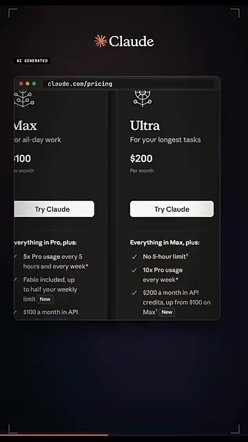
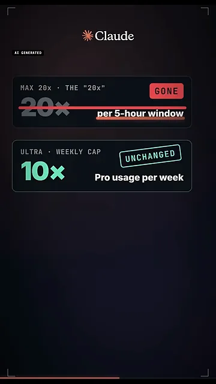
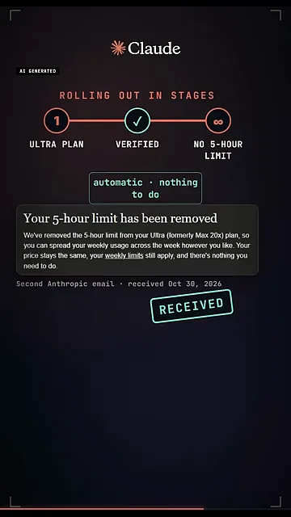
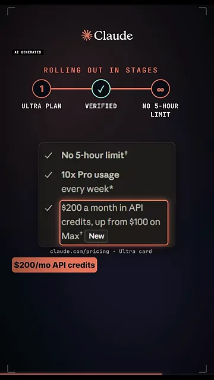

이름만 바뀌고 나머지는 그대로예요
Max 20x 요금제가 Ultra라는 새 이름을 받았어요. 요금제 네 개(Free, Pro, Max, 그리고 새 이름) 중 바뀐 건 맨 위 하나뿐이에요.
근거는 Anthropic이 2026년 10월 30일 Max 20x 구독자에게 보낸 메일이에요. 아래 화면 가운데 상자가 그 메일이고, 그 아래 체크 표시 네 개가 바뀌지 않는 항목이에요. 가격, 기능, 결제일, 주간 한도예요. 메일은 따로 할 일도 없다고 덧붙여요. 위쪽의 '$200 / month · same'은 월 200달러도 그대로라는 뜻이에요.

5시간 한도만 사라지고 주간 한도는 남아요
달라진 건 5시간 한도 하나예요. 영상은 0시부터 8시까지 눈금 위에 막대를 그려 이걸 보여 줘요. 백그라운드에서 도는 작업('BACKGROUND RUN')이 5시간 눈금에 닿으면 빨간 점선에서 멈춰 버리는 모습이에요.
아래 화면의 메일 문단 중 빨간 테두리를 친 부분이 Anthropic이 댄 이유예요. Claude의 작업이 점점 더 몇 시간씩 백그라운드에서 도는데, 5시간 한도가 그걸 중간에 멈추게 하면 안 된다는 거예요. 한도가 사라지면 주간 사용량을 한 주 안에서 원하는 대로 나눠 쓸 수 있다고 이어져요.

요금제 페이지에서는 이렇게 보여요
claude.com/pricing의 오른쪽 Ultra 카드 맨 아래 목록을 보면 세 줄이 있어요. 'No 5-hour limit', 'Pro의 10배 사용량, 매주', 그리고 API 크레딧이에요. 왼쪽에 잘린 Max 카드(월 100달러)는 'Pro의 5배, 5시간마다 그리고 매주'라고 적혀 있어서, 두 요금제가 한도를 세는 방식이 다르다는 게 드러나요.

그럼 '20x'는 어디 갔을까요. 화자는 이 숫자가 5시간 창 기준의 배수였다고 짚어요. 아래 화면 위쪽 카드에서 '20x per 5-hour window'에 줄이 그어지고 'GONE'이 붙어 있어요. 아래쪽 카드의 '주간 한도 Pro의 10배'에는 'UNCHANGED'가 붙어 있어요. 20에서 10으로 줄어든 게 아니라, 재는 기준 하나가 사라지고 남은 주간 한도가 그대로라는 뜻이에요.

| 항목 | Max 20x (예전) | Ultra (지금) |
|---|---|---|
| 월 요금 | 200달러 | 200달러, 그대로 |
| 5시간 한도 | 있음 (Pro의 20배) | 없음 |
| 주간 한도 | 있음 | Pro의 10배, 바뀌지 않음 |
| 매달 API 크레딧 | 100달러 | 200달러 |
적용 방식과 늘어난 API 크레딧
변경은 모든 계정에 한꺼번에 들어가지 않고 단계적으로 퍼져요. 아래 화면 위쪽의 세 단계가 순서예요. Ultra 요금제 → 인증됨('VERIFIED') → 5시간 한도 없음. 가운데 단계 밑에 '자동 · 할 일 없음'이라고 붙어 있어요. 인증이 끝나면 '5시간 한도가 해제됐다'는 두 번째 메일이 오고, 화자는 자기도 이 메일을 받았다고 해요(화면의 'RECEIVED' 도장).

API 크레딧이 두 배로 늘었어요
Ultra 카드의 세 번째 줄에 빨간 테두리가 쳐져 있어요. 매달 200달러어치 API 크레딧, Max의 100달러에서 늘었다는 내용이에요. 옆에 New 표시가 붙어 있어요.

누구에게 달라지나요
화자의 결론은 짧아요. 에이전트를 몇 시간씩 돌리는 사람에게는 작업을 중간에 멈추던 벽이 사라져요. 주로 대화만 하는 사람에게는 달라지는 게 없어요. 영상은 '주간 한도만, 5시간 리셋 없음'이라는 말로 끝나요.
If your agents run for hours, this removes the wall that stopped them mid task. If you mostly chat, nothing changed.
에이전트를 몇 시간씩 돌린다면 작업을 중간에 멈추던 벽이 사라져요. 주로 대화만 한다면 바뀐 건 없어요.
— 영상 00:33